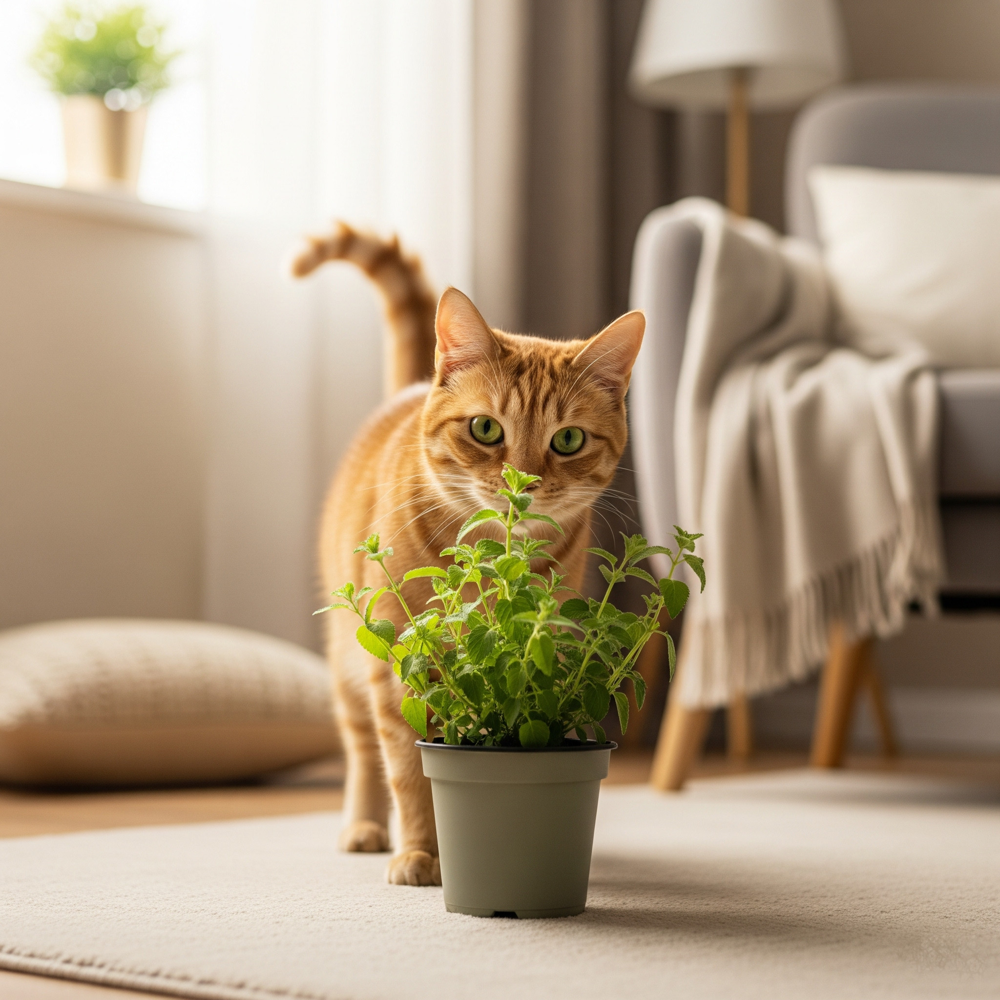

Meu Gato Comeu uma Planta: O que Fazer?

Quem convive com gatos sabe o quanto eles são curiosos. Não é raro flagrar um gatinho mordiscando folhas ou flores pela casa. Mas o que fazer se o seu gato comeu uma planta e você não tem certeza se ela é segura? Este post é um guia rápido e objetivo para situações de emergência — com sintomas a observar, como agir e quando procurar o veterinário.
Nem sempre uma planta bonita e inofensiva para humanos é segura para os gatos. Muitas espécies comuns em jardins e decorações contêm substâncias que podem causar intoxicações nos felinos. Como os gatos metabolizam algumas toxinas de forma diferente, até pequenas quantidades podem gerar problemas sérios.
⚠️ Sintomas comuns de intoxicação em gatos:
- Salivação excessiva
- Vômitos
- Diarreia
- Falta de apetite
- Fraqueza ou apatia
- Dificuldade para respirar
- Tremores ou convulsões
- Pupilas dilatadas
- Irritação na boca ou língua
Importante: Nem todos os sintomas aparecem de imediato — às vezes os sinais surgem após algumas horas.
🚨 O que fazer imediatamente (checklist de emergência):
| Ação | Descrição |
|---|---|
| 1️⃣ Retirar o acesso | Afaste o vaso ou folhas mastigadas |
| 2️⃣ Identificar a planta | Anote o nome ou fotografe |
| 3️⃣ NÃO induzir vômito | Pode piorar o quadro |
| 4️⃣ NÃO dar leite ou carvão | Ineficazes e perigosos |
| 5️⃣ Observar sintomas | Registre qualquer sinal diferente |
| 6️⃣ Procurar o veterinário | Leve o gato e, se possível, a planta |
🌿 Plantas de maior risco:
- Lírios (todas as variedades) — extremamente tóxicos, causam falência renal
- Comigo-ninguém-pode — provoca irritação intensa na boca e garganta
- Antúrios — causam desconforto oral e risco respiratório
- Costela-de-adão — salivação e irritação oral
- Espada-de-São-Jorge — vômitos e diarreia
✅ Prevenção: como evitar acidentes
- Conheça todas as plantas da sua casa
- Evite espécies tóxicas ou coloque fora do alcance
- Consulte nossa lista de plantas tóxicas para gatos
- Ofereça graminhas e plantas seguras para redirecionar a curiosidade
- Estimule seu gato com brinquedos e ambientes ricos
Situações como essa causam pânico — mas com informação e ação rápida, é possível evitar complicações. Se houver qualquer suspeita de intoxicação, procure imediatamente o veterinário.
Ambientes verdes e gatos podem sim conviver — com escolhas inteligentes e seguras!
← Voltar para o blog